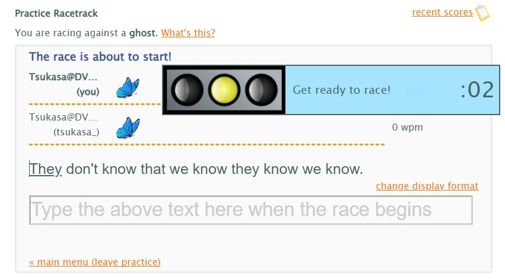

From the New World
typeracerで任意のテキストを打つ方法
typeracerで任意の（好きな）テキストを打つ方法を紹介します。
これにより、以下のことが可能になります。
・短く打ちやすい文章を繰り返し走ることで、best raceを更新する
・最高wpmが低いテキストを繰り返し走って更新することで、text bestを上昇させる
※なお、以下に紹介するやり方では、記録を保存するために「typeracerプレミアムアカウント」を購入する必要があります。
無料アカウントでは、走れても「記録の保存」が出来ないので、そこだけ注意してください。
やり方
まず、
typeracer dataにアクセスします。
アクセスすると、最初は以下のような画面になっていると思うので、「Texts」を選択します。
※「Texts」ページは非常に重いため、性能の低いPCでは固まる恐れがあります。ご注意ください。
「Texts」ページを開くと以下の画面になります。
ここから、自分が打ちたいテキストを探し、「Text」の列に表示されている文章（リンク）をクリックします。
今回は、一番上の文章を打つことにします。
テキストの全文と、テキストのランキングが表示されます。
次に、「View Pit Stop page for this text」をクリックします。
すると、typeracerのPit Stopというページに飛ぶことができます。
ここでは、ログインしている場合①に「自分が打った履歴」が表示され、②には1つ前のページと同様にランキングが表示されます。
次に、①と②どちらでもよいので、「Options」の列にあるゴーストのアイコンをクリックします。
すると、Practiceモードと同様の形式で、指定したゴーストとレースする形でそのテキストを打つことができます。
後は、走り終わった後に「Save」を押せば、通常のレースと同じように記録を残すことができます。

以上が、「typeracerで任意のテキストを打つ」方法になります。
もしかすると「これはズルだ！」と思われた方もいるかもしれませんが、
・プレミアムアカウントを購入すれば誰でも行うことができる
・無料アカウントで任意のテキストを打とうとすると、膨大な試行回数が必要（テキストが7000以上あるため）で非常に不便
・text bestやbest raceの上位陣は（おそらくですが）皆使っている
これらを考慮すると、個人的にはズルというよりむしろ「効率のいい」方法なんじゃないかと思います。
皆さんもこのやり方で好きなテキストを走り、快適なtyperacerライフを送りましょう！
おまけ
同様に、typeracer dataから
・「View Profile」に自分のアカウントのユーザIDを入れ、自分のアカウントのページに移動する
→もしアカウントが見つからない場合は、「Import」から自分のアカウントをtyperacer dataにインポートする必要があります
・「View text analysis of races by ユーザID」をクリック
・「View texts not yet raced by ユーザID」をクリック
とすることで、「そのアカウントでまだ走っていないテキストの一覧」を表示することができます。
これは本当に便利！
「Text」をクリックすれば、上記と同様の手順でそのテキストを打つこともできます。
結論
typeracerのプレミアムアカウントを買おう！！！！！
2023年5月29日時点だと2811円($19.99)/年で購入することができます！！！！！
- Top Page -